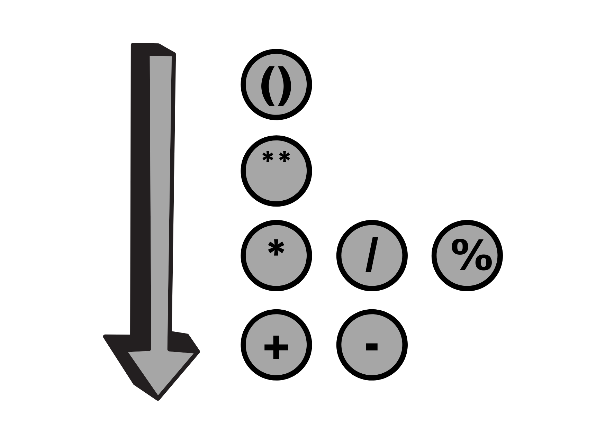

O JavaScript possui muitos operadores, entre os principais temos:
Aritméticos
Operadores aritméticos tomam valores numéricos como seus operandos e retornam um único valor númerico. Os operadores aritméticos padrão são os de soma (+), subtração (-), multiplicação (*) e divisão (/). Estes operadores trabalham da mesma forma como na maioria das linguagens de programação quando utilizados com números de ponto flutuante.
-
Exemplo:
- 5 + 2 = 7
- 5 - 2 = 3
- 5 * 2 = 10
- 5 / 2 = 2.5
- 5 % 2 = 1
- 5 ** 2 = 25
Precedência dos operadores
Atribuição
Um operador de atribuição atribui um valor ao operando à sua esquerda baseado no valor do operando à direita. O operador de atribuição básico é o igual (=), que atribui o valor do operando à direita ao operando à esquerda. Isto é, x = y atribui o valor de y a x.
| Nome | Operador |
|---|---|
| Atribuição | x=y |
| Adição | x+=y |
| Subtração | x-=y |
| Multiplicação | x*=y |
| Divisão | x/=y |
Relacionais
Um operador relacional compara seus operandos e retorna um valor booleano (True/False) baseado em se a comparação é verdadeira.
Lógicos
Ternários